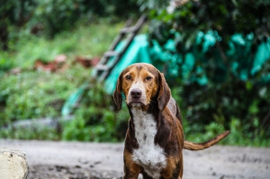
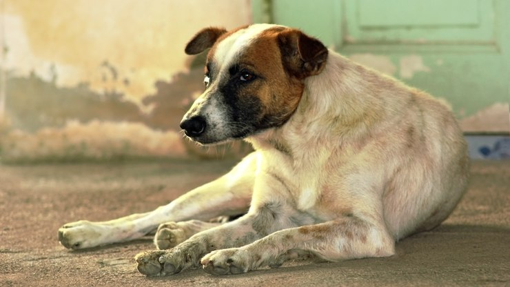
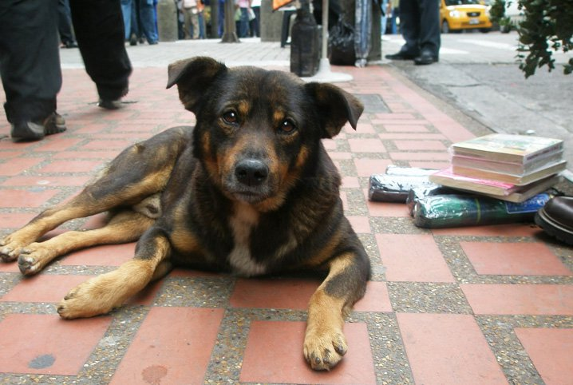

Brasil tem 3,9 milhões de animais em condição de vulnerabilidade
Do total da população ACV (Animais em condição de vulnerabilidade), cães representam 69% (2,69 milhões). Os dados são do Instituto Pet Brasil (IPB). Os Animais em Condição de Vulnerabilidade são aqueles que vivem sob tutela das famílias classificadas abaixo da linha de pobreza, ou que vivem nas ruas, mas recebem cuidados de pessoas.


